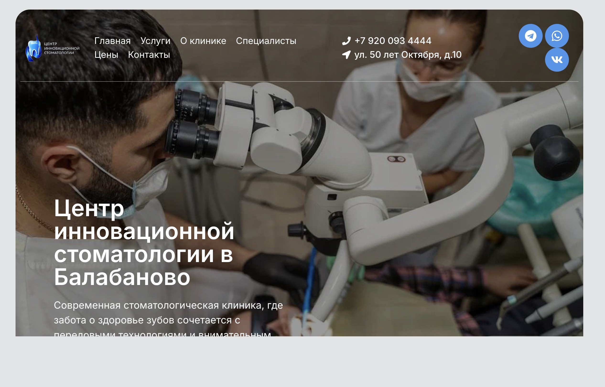
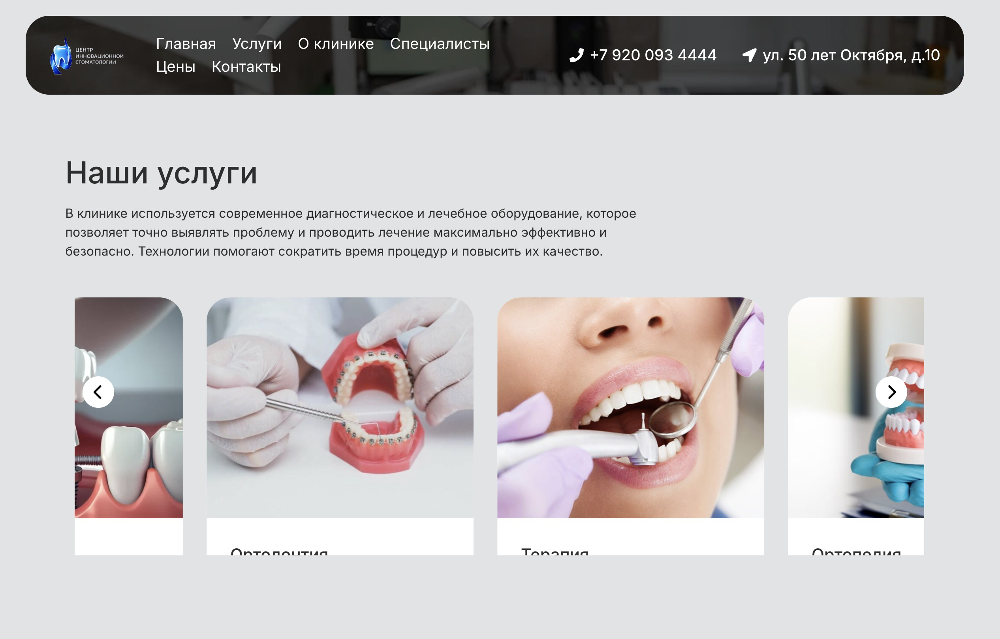

ПОРТФОЛИО / СТОМАТОЛОГИЯ
Центр инновационной стоматологии.
Сайт клиники в Балабаново
На сайте собрана информация о стоматологических услугах, специалистах, ценах и контактах клиники.
Посетить сайт (откроется в новой вкладке)- ПРОЕКТ
- Сайт клиники
- СФЕРА
- Стоматология
- ПЛАТФОРМА
- WordPress / Elementor
- ЛОКАЦИЯ
- Балабаново
ПРОЕКТ В ДЕТАЛЯХ
INSTOM40.RU / 05

01 / О ПРОЕКТЕ
Услуги и специалисты
клиники.
Центр инновационной стоматологии работает в Балабаново. Сайт знакомит посетителей со стоматологическими услугами и специалистами.
Также на сайте представлены цены и контактная информация.
Открыть instom40.ru (откроется в новой вкладке)02 / УСЛУГИ
Направления
стоматологии.
Страница услуг помогает познакомиться с направлениями работы клиники.

ВАШ ПРОЕКТ / НАЧНЁМ С РАЗГОВОРА